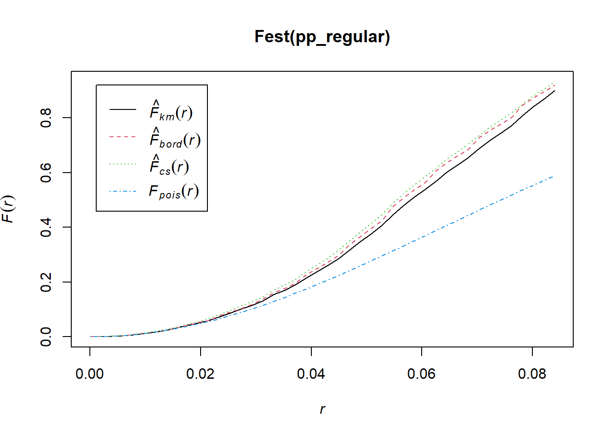
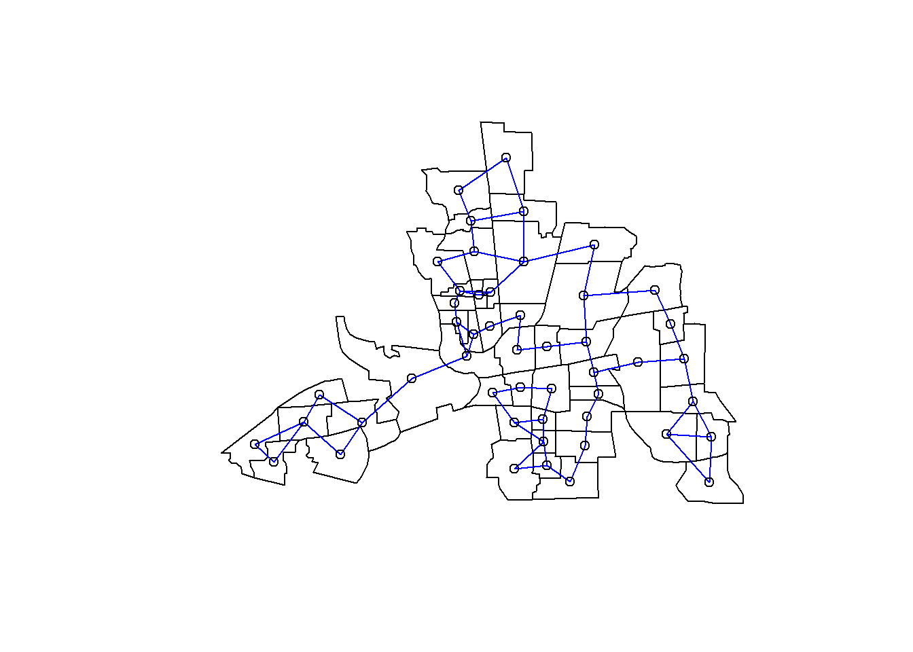
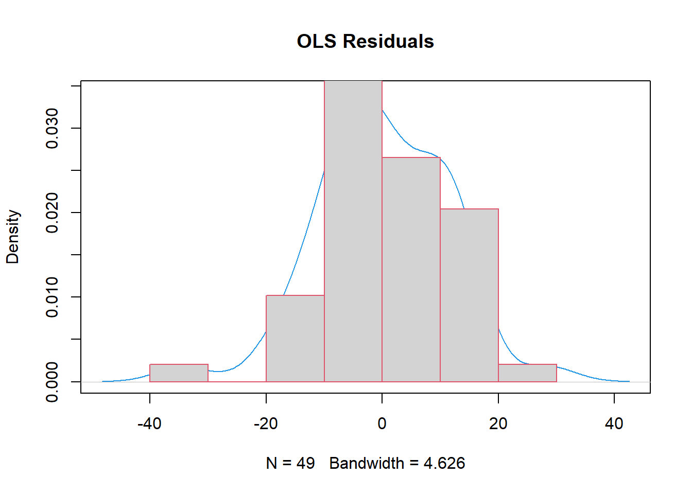
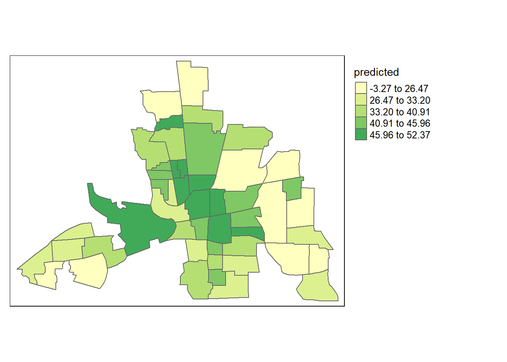
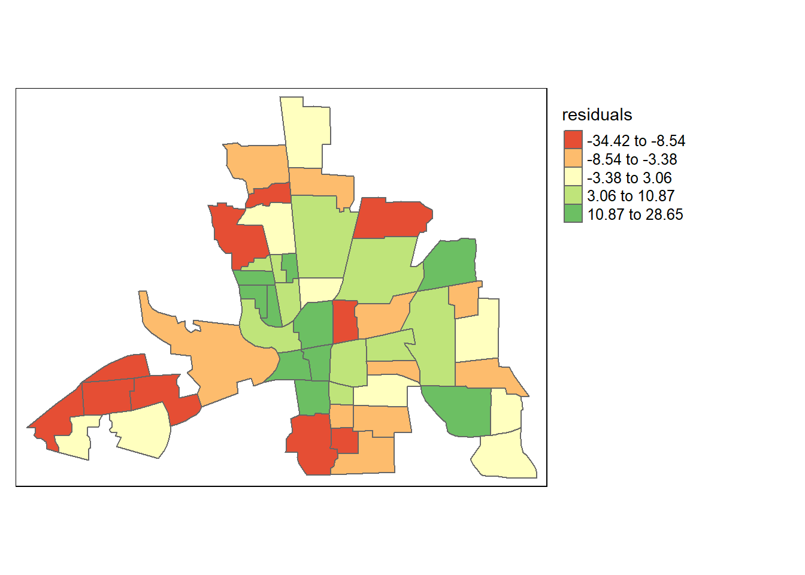

Chapter 3 Spatial Lattice Data Analysis
3.1 Prerequisites
## Warning: package 'tmap' was built under R version 4.0.2## Warning: package 'spdep' was built under R version 4.0.2## Loading required package: spData## Warning: package 'spData' was built under R version 4.0.2## To access larger datasets in this package, install the spDataLarge
## package with: `install.packages('spDataLarge',
## repos='https://nowosad.github.io/drat/', type='source')`##
## Attaching package: 'spData'## The following object is masked _by_ '.GlobalEnv':
##
## elev## Warning: package 'maptools' was built under R version 4.0.2## Checking rgeos availability: TRUE3.2 Columbus Dataset
##
## colmbs> columbus <- st_read(system.file("shapes/columbus.shp", package="spData")[1], quiet=TRUE)
##
## colmbs> col.gal.nb <- read.gal(system.file("weights/columbus.gal", package="spData")[1])
## Warning: Currect projection of shape columbus unknown. Long-lat (WGS84) is
## assumed.3.3 Obtain the Centroids
3.4 Obtain the Neighbourhood Relationship
3.4.1 Contiguity Based Neighbours
3.4.1.1 Rook style NB
## [1] "nb"## Neighbour list object:
## Number of regions: 49
## Number of nonzero links: 200
## Percentage nonzero weights: 8.329863
## Average number of links: 4.081633As you can see this is an “nb” class object and for each polygon (in the Columbus dataset we have 49 polygons) in our polygon object, nbRook lists all neighboring polygons. For example, to see the neighbors for the first polygon in the object, type:
## [1] 2 3Polygon 1 has 2 neighbours according to Queen Style Contiguity Based Neighbour definition. These 2 neighbours are Poly2 and Poly3.

3.4.1.2 Queen style NB
nbQueen <- poly2nb(as(columbus, "Spatial"), queen = TRUE)
plot(st_geometry(columbus))
plot(nbQueen, coords, add=TRUE, col="red")
3.4.1.3 Difference between Rook and Queen
dQueenRook <- diffnb(nbQueen, nbRook)
plot(st_geometry(columbus))
plot(nbRook, coords, add = TRUE, col = "blue")
plot(dQueenRook, coords, add = TRUE, col = "red")
title(main=paste("Differences (red) in Rook",
"and polygon generated queen weights", sep="\n"), cex.main=0.6)
3.4.2 Distance Based Neighbours
3.4.2.1 1st Nearest Neighbour
3.4.2.2 Two Nearest Neighbour
3.4.2.3 Critical Cut-off
distBetwNeigh1=nbdists(knn1columbus,coords,longlat=TRUE)
all.linkedTresh=max(unlist(distBetwNeigh1))
all.linkedTresh## [1] 67.50447## Neighbour list object:
## Number of regions: 49
## Number of nonzero links: 252
## Percentage nonzero weights: 10.49563
## Average number of links: 5.142857
## Link number distribution:
##
## 1 2 3 4 5 6 7 8 9 10 11
## 4 8 6 2 5 8 6 2 6 1 1
## 4 least connected regions:
## 6 10 21 47 with 1 link
## 1 most connected region:
## 28 with 11 links
If you examine this neighbourhood list object a bit more closely you will see that, Polygon1 is neighbours with Poly2 and Poly3; Polygon2 is neighbours with Poly1 and Poly4; Polygon3 is neighbours with Poly1, Poly4 and Poly5 and so on:
## [[1]]
## [1] 2 3
##
## [[2]]
## [1] 1 4
##
## [[3]]
## [1] 1 4 5In calculation of the weights that will be used to create the spatially lagged variables, only the neighbours values are going to be used. For example for the 1st Polygon, the values of neighbouring Poly2 and Poly3 will be used. Before doing this the nb values need to be standardized, so that the row
3.5 Neighbours to Weights Matrix
Here we will work with the Critical Cut-off nearest neighbours
## [1] "listw" "nb"## [[1]]
## [1] 0.5 0.5
##
## [[2]]
## [1] 0.5 0.5
##
## [[3]]
## [1] 0.3333333 0.3333333 0.3333333
##
## [[4]]
## [1] 0.25 0.25 0.25 0.25
##
## [[5]]
## [1] 0.2 0.2 0.2 0.2 0.2In matrix format rather than a list:
## [,1] [,2] [,3] [,4] [,5]
## 1 0.0000000 0.50 0.50 0.0000000 0.0000000
## 2 0.5000000 0.00 0.00 0.5000000 0.0000000
## 3 0.3333333 0.00 0.00 0.3333333 0.3333333
## 4 0.0000000 0.25 0.25 0.0000000 0.0000000
## 5 0.0000000 0.00 0.20 0.0000000 0.00000003.6 Moran’s I
3.6.1 Manual Calculation of Moran’s I Statistic with Matrix Operations
We can manually calculate the Moran’s I statistic using the lag operation with our chosen weights matrix, nearest neighbours within 68kms of radius.
weightsmatrix_s = listw2mat(dnbTresh1.listw)
Y_s = columbus$CRIME - mean(columbus$CRIME)
t(Y_s)%*%weightsmatrix_s%*%Y_s/(t(Y_s)%*%Y_s)## [,1]
## [1,] 0.5518257The spatially lagged values of Y variable are obtained with W*Y as in your Moran’s I test statistic. Moran’s I is measuring the dependency of your Y values to the neighbouring Y values after all.
3.6.2 Moran’s I Test with moran.test() function
The same value can be simply obtained using the moran.test() function.
##
## Moran I test under randomisation
##
## data: columbus$CRIME
## weights: dnbTresh1.listw
##
## Moran I statistic standard deviate = 5.6206, p-value = 9.514e-09
## alternative hypothesis: greater
## sample estimates:
## Moran I statistic Expectation Variance
## 0.55182569 -0.02083333 0.01038068Examine the following:
## [,1]
## 1 -10.414556
## 2 -11.071954
## 3 -2.180407
## 4 -13.120658
## 5 12.195025
## 6 -4.612907This is the spatialy lagged value for the Y variable. Technically it is the average Y values of the neighbouring polygons around each and every single polygon. For example take the 1st polygon, the lagged value of the 1st polygon is the average of the values for 2nd and 3rd polygons:
## [1] -10.41456# We can automatically create spatially lagged values of Y variable, this corresponds to W*Y in your Moran's I test statistic:
lagY_s <- lag.listw(dnbTresh1.listw, Y_s)lm_eqn <- function(df, y, x){
m <- lm(y ~ x, df);
eq <- substitute(italic(y) == a + b %.% italic(x)*","~~italic(r)^2~"="~r2,
list(a = format(unname(coef(m)[1]), digits = 2),
b = format(unname(coef(m)[2]), digits = 2),
r2 = format(summary(m)$r.squared, digits = 3)))
as.character(as.expression(eq));
}
dataMoransI = data.frame(Y_s, lagY_s)
library(ggplot2)
ggplot(dataMoransI, aes(x = Y_s, y = lagY_s)) + geom_point() + geom_smooth(method = "lm", se=FALSE)+geom_text(x = -10, y = 20, label = lm_eqn(dataMoransI,lagY_s,Y_s), parse = TRUE)+geom_vline(xintercept=0, linetype="dashed", color = "red")+geom_hline(yintercept=0.78, linetype="dashed", color = "red")## `geom_smooth()` using formula 'y ~ x'Here the slope of the lm is the Moran’s I value. The same plot can be obtained using the moran.plot() function as follows:
3.7 Local Moran’s I
## Ii E.Ii Var.Ii Z.Ii Pr(z > 0)
## 1 0.73681849 -0.02083333 0.4769225 1.0970989 0.13629908
## 2 0.65915397 -0.02083333 0.4769225 0.9846387 0.16240078
## 3 0.03579329 -0.02083333 0.3112215 0.1015046 0.45957494
## 4 0.13113818 -0.02083333 0.2283710 0.3180107 0.37523841
## 5 0.69380337 -0.02083333 0.1786607 1.6907167 0.04544546
## 6 0.15242670 -0.02083333 0.9740254 0.1755550 0.43032177Plot of the Local Moran Statistics
tm_shape(columbus) + tm_polygons(style="quantile", col = "localmoran") +
tm_legend(outside = TRUE, text.size = .8)## Warning: Currect projection of shape columbus unknown. Long-lat (WGS84) is
## assumed.## Variable(s) "localmoran" contains positive and negative values, so midpoint is set to 0. Set midpoint = NA to show the full spectrum of the color palette.
3.8 Modeling Spatial Lattice Data
3.8.1 Model 0: OLS
##
## Call:
## lm(formula = CRIME ~ INC + HOVAL, data = columbus)
##
## Residuals:
## Min 1Q Median 3Q Max
## -34.418 -6.388 -1.580 9.052 28.649
##
## Coefficients:
## Estimate Std. Error t value Pr(>|t|)
## (Intercept) 68.6190 4.7355 14.490 < 2e-16 ***
## INC -1.5973 0.3341 -4.780 1.83e-05 ***
## HOVAL -0.2739 0.1032 -2.654 0.0109 *
## ---
## Signif. codes: 0 '***' 0.001 '**' 0.01 '*' 0.05 '.' 0.1 ' ' 1
##
## Residual standard error: 11.43 on 46 degrees of freedom
## Multiple R-squared: 0.5524, Adjusted R-squared: 0.5329
## F-statistic: 28.39 on 2 and 46 DF, p-value: 9.341e-09columbus$predicted <- predict(OLScolumbus) # Save the predicted values
columbus$residuals <- residuals(OLScolumbus)
plot(OLScolumbus, which=1, col=c("blue")) # Residuals vs Fitted Plot

plot(density(resid(OLScolumbus)), main="OLS Residuals", col=4)
hist(resid(OLScolumbus), freq=FALSE, add=TRUE, border=2)
Map of the Predicted values
tm_shape(columbus) + tm_polygons(style="quantile", col = "predicted") +
tm_legend(outside = TRUE, text.size = .8)## Warning: Currect projection of shape columbus unknown. Long-lat (WGS84) is
## assumed.## Variable(s) "predicted" contains positive and negative values, so midpoint is set to 0. Set midpoint = NA to show the full spectrum of the color palette. Map of the Resids
tm_shape(columbus) + tm_polygons(style="quantile", col = "residuals") +
tm_legend(outside = TRUE, text.size = .8)## Warning: Currect projection of shape columbus unknown. Long-lat (WGS84) is
## assumed.## Variable(s) "residuals" contains positive and negative values, so midpoint is set to 0. Set midpoint = NA to show the full spectrum of the color palette.
##
## Global Moran I for regression residuals
##
## data:
## model: lm(formula = CRIME ~ INC + HOVAL, data = columbus)
## weights: dnbTresh1.listw
##
## Moran I statistic standard deviate = 3.0562, p-value = 0.001121
## alternative hypothesis: greater
## sample estimates:
## Observed Moran I Expectation Variance
## 0.266348450 -0.032344498 0.0095519883.8.3 Spatial LM Tests
ST=lm.LMtests(OLScolumbus,listw=dnbTresh1.listw,test="all")
out=t(sapply(ST,function(x) c(x$statistic,x$parameter,x$p.value))) # t() is for transpose. sapply()
# is for generating a vector out of a list ST here in this case to extract the statistics, parameter values and the p-values.
colnames(out)=c("Statistics","df","p-value")
printCoefmat(out) # this rounds the numbers so if you like you can just type:## Statistics df p-value
## LMerr 6.36707 1.00000 0.0116
## LMlag 13.69042 1.00000 0.0002
## RLMerr 0.10161 1.00000 0.7499
## RLMlag 7.42495 1.00000 0.0064
## SARMA 13.79203 2.00000 0.0010## Statistics df p-value
## LMerr 6.3670738 1 0.0116257146
## LMlag 13.6904198 1 0.0002155513
## RLMerr 0.1016064 1 0.7499103168
## RLMlag 7.4249524 1 0.0064325528
## SARMA 13.7920262 2 0.00101181143.8.4 Model 1: First Order Spatial Autoregressive Model
sarml.eigColumbus1st<-lagsarlm(CRIME ~ 1,data = columbus,
listw = dnbTresh1.listw, method = "eigen")
summary(sarml.eigColumbus1st)##
## Call:lagsarlm(formula = CRIME ~ 1, data = columbus, listw = dnbTresh1.listw,
## method = "eigen")
##
## Residuals:
## Min 1Q Median 3Q Max
## -41.9133 -6.2354 -1.8463 7.9243 22.7785
##
## Type: lag
## Coefficients: (asymptotic standard errors)
## Estimate Std. Error z value Pr(>|z|)
## (Intercept) 10.9622 3.8436 2.8521 0.004343
##
## Rho: 0.67292, LR test value: 24.112, p-value: 9.0914e-07
## Asymptotic standard error: 0.1026
## z-value: 6.5588, p-value: 5.4238e-11
## Wald statistic: 43.018, p-value: 5.4238e-11
##
## Log likelihood: -195.0161 for lag model
## ML residual variance (sigma squared): 144.52, (sigma: 12.022)
## Number of observations: 49
## Number of parameters estimated: 3
## AIC: 396.03, (AIC for lm: 418.14)
## LM test for residual autocorrelation
## test value: 0.011747, p-value: 0.913693.8.5 Model 2: Spatial Lag Model with Independent Variables
sarml.eigColumbus<-lagsarlm(CRIME ~ INC+HOVAL,data = columbus,
listw = dnbTresh1.listw, method = "eigen")
summary(sarml.eigColumbus)##
## Call:
## lagsarlm(formula = CRIME ~ INC + HOVAL, data = columbus, listw = dnbTresh1.listw,
## method = "eigen")
##
## Residuals:
## Min 1Q Median 3Q Max
## -35.56513 -4.88237 -0.58988 6.37341 21.07215
##
## Type: lag
## Coefficients: (asymptotic standard errors)
## Estimate Std. Error z value Pr(>|z|)
## (Intercept) 42.085584 6.669564 6.3101 2.789e-10
## INC -0.954166 0.289090 -3.3006 0.0009649
## HOVAL -0.274530 0.083376 -3.2927 0.0009924
##
## Rho: 0.48203, LR test value: 14.689, p-value: 0.00012677
## Asymptotic standard error: 0.10625
## z-value: 4.5365, p-value: 5.7186e-06
## Wald statistic: 20.58, p-value: 5.7186e-06
##
## Log likelihood: -180.0326 for lag model
## ML residual variance (sigma squared): 85.091, (sigma: 9.2245)
## Number of observations: 49
## Number of parameters estimated: 5
## AIC: 370.07, (AIC for lm: 382.75)
## LM test for residual autocorrelation
## test value: 1.0641, p-value: 0.302273.8.6 Model 3: Spatial Error Model
errorsarml.eigColumbus = errorsarlm(CRIME ~ INC + HOVAL,data = columbus,
listw=dnbTresh1.listw, method = "eigen")
summary(errorsarml.eigColumbus)##
## Call:
## errorsarlm(formula = CRIME ~ INC + HOVAL, data = columbus, listw = dnbTresh1.listw,
## method = "eigen")
##
## Residuals:
## Min 1Q Median 3Q Max
## -34.6052 -6.2626 -1.4487 7.1525 21.9104
##
## Type: error
## Coefficients: (asymptotic standard errors)
## Estimate Std. Error z value Pr(>|z|)
## (Intercept) 57.846216 5.438649 10.6361 < 2.2e-16
## INC -0.947213 0.328219 -2.8859 0.003903
## HOVAL -0.246523 0.085594 -2.8802 0.003975
##
## Lambda: 0.60735, LR test value: 10.718, p-value: 0.0010608
## Asymptotic standard error: 0.11699
## z-value: 5.1914, p-value: 2.087e-07
## Wald statistic: 26.951, p-value: 2.087e-07
##
## Log likelihood: -182.0181 for error model
## ML residual variance (sigma squared): 87.946, (sigma: 9.378)
## Number of observations: 49
## Number of parameters estimated: 5
## AIC: 374.04, (AIC for lm: 382.75)3.8.7 Model 4: Spatial Lag and Spatial Error model
sacsarlm.Columbus<-sacsarlm(CRIME ~ INC + HOVAL,data = columbus,
listw = dnbTresh1.listw)
summary(sacsarlm.Columbus)##
## Call:
## sacsarlm(formula = CRIME ~ INC + HOVAL, data = columbus, listw = dnbTresh1.listw)
##
## Residuals:
## Min 1Q Median 3Q Max
## -35.54705 -4.79472 -0.86238 5.75417 20.56831
##
## Type: sac
## Coefficients: (asymptotic standard errors)
## Estimate Std. Error z value Pr(>|z|)
## (Intercept) 44.783014 9.254093 4.8393 1.303e-06
## INC -0.969809 0.313558 -3.0929 0.0019820
## HOVAL -0.278742 0.084102 -3.3143 0.0009187
##
## Rho: 0.41753
## Asymptotic standard error: 0.18889
## z-value: 2.2105, p-value: 0.027072
## Lambda: 0.22366
## Asymptotic standard error: 0.28103
## z-value: 0.79585, p-value: 0.42612
##
## LR test value: 15.518, p-value: 0.00042695
##
## Log likelihood: -179.6184 for sac model
## ML residual variance (sigma squared): 84.119, (sigma: 9.1716)
## Number of observations: 49
## Number of parameters estimated: 6
## AIC: 371.24, (AIC for lm: 382.75)